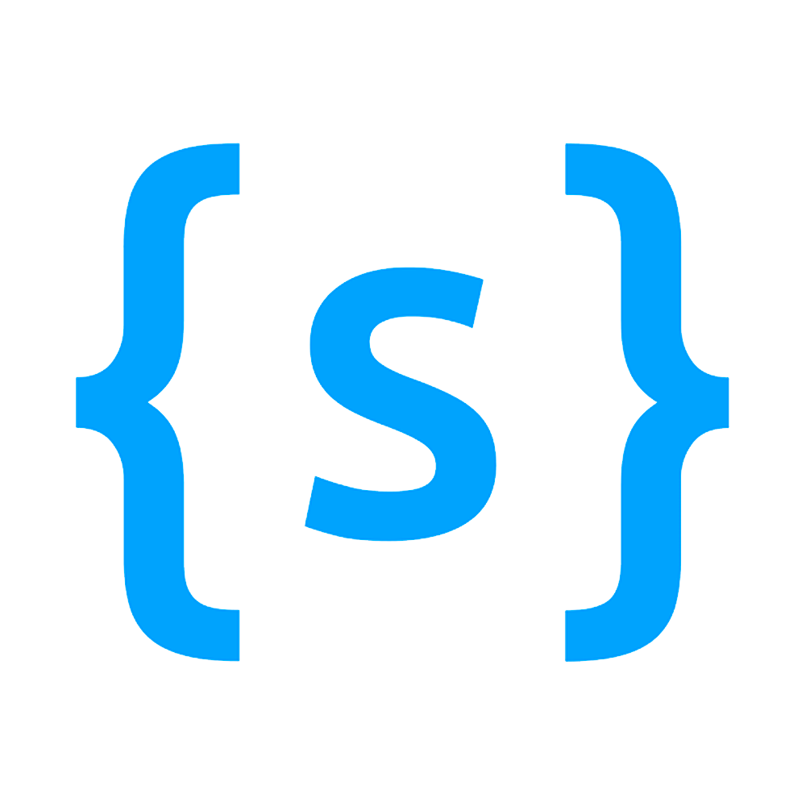

- Contato
- Integrantes
- Processo seletivo
- Como funciona
- Onde operamos
- Nossa filosofia

{ struct }
A Struct é a empresa junir da Engenharia de Computação UnB, é gerida pelos próprios alunos do curso
que trabalham com afinco e dedicação
Desenvolvimento personalizado de Aplicações Mobile e Web